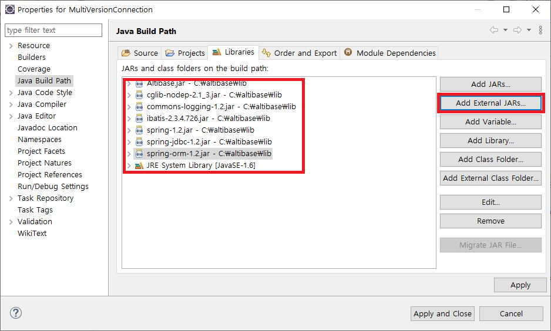

LOB Data Processing
In order to process LOB in iBATIS, jdbcType must be specified as CLOB/BLOB in the part of setting the information about the parameter and result in the SqlMap file.
Otherwise, incorrect data can be entered or incorrect data can be queried by the length limit. Or, an error such as invalid length may occur.
Therefore, mapping for parameter and result must be designated as CLOB/BLOB
The following is an example of setting parameterMap and resultMap for CLOB type data.
Ex) LobSample's LobSample.xml (SqlMap) file
<sqlMap namespace="LobSample">
<resultMap id="LobSampleResult" class="com.altibase.lob.LobSample">
<result property="lob_id" column="lob_id" />
<result property="lobcolumn" column="lobcolumn"
jdbcType="CLOB" javaType="java.lang.String" />
</resultMap>
<parameterMap id="LobSampleParam" class="com.altibase.lob.LobSample">
<parameter property="lob_id" />
<parameter property="lobcolumn"
jdbcType="CLOB" javaType="java.lang.String" />
</parameterMap>
<select id="getLobSample" parameterClass="int" resultMap="LobSampleResult">
SELECT lob_id, lobcolumn
FROM lobsample
WHERE lob_id = #value#
</select>
<insert id="insertLobSample" parameterMap="LobSampleParam">
INSERT INTO lobsample (lob_id,lobcolumn)
VALUES (?,?)
</insert>
…
</sqlMap>
In addition, the important thing to be careful when processing LOB is that in order to process LOB data in Altibase, the transaction must be managed after changing the autocommit mode to false. When setting dataSource in <transactionManager> of SqlMapConfig file when integrating iBATIS, setAutoCommit(false); There is no consideration when processing LOB because the autocommit mode is changed to false by calling the method. However, if iBATIS and Spring are linked together, if the user manages transactions in Spring, the user must specify TransactionManager bean to process LOB.
In addition, in the case of declarative transaction processing in Spring, propagation must be specified as one of PROPAGATION_REQUIRED, PROPAGATION_REQUIRES_NEW, and PROPAGATION_NESTED.
If TransactionManager is not specified or propagation is set to a value other than the above described when using declarative transaction, a null value is returned when querying LOB data, or "java.sql.SQLException: [DOCKI: 0]: An error such as LobLocator can not span the transaction 101858625" occurs.
In addition, when entering LOB data, "java", "java.sql.SQLException: [DOCKI: 0]: An error such as LobLocator can not span the transaction 101858625" occurs.
The following example is an example of processing LOB data by declaratively processing a transaction in Spring's applicationContext.xml.
For more detailed information on how to process transactions declaratively, please refer to the document "Spring Integration Guide for Altibase".
Ex) LobSpringIbatisSample's applicationContext.xml file
…
<bean id="dataSource"
class="org.springframework.jdbc.datasource.DriverManagerDataSource">
<property name="driverClassName" value="Altibase.jdbc.driver.AltibaseDriver"/>
<property name="url" value="jdbc:Altibase://192.168.1.35:21129/mydb"/>
<property name="username" value="sys"/>
<property name="password" value="manager" />
</bean>
<bean id="sqlMapClient"
class="org.springframework.orm.ibatis.SqlMapClientFactoryBean">
<property name="dataSource" ref="dataSource"/>
<property name="configLocation" value="SqlMapConfigExample.xml"/>
</bean>
<bean id="transactionManager"
class="org.springframework.jdbc.datasource.DataSourceTransactionManager">
<property name="dataSource" ref="dataSource"/>
</bean>
<bean id="txProxyTemplate" abstract="true"
class="org.springframework.transaction.interceptor.TransactionProxyFactoryBean">
<property name="transactionManager" ref="transactionManager" />
<property name="transactionAttributes">
<props>
<prop key="insert*">PROPAGATION_REQUIRED</prop>
<prop key="update*">PROPAGATION_REQUIRED</prop>
<prop key="delete*">PROPAGATION_REQUIRED</prop>
<prop key="get*">PROPAGATION_REQUIRED</prop>
</props>
</property>
</bean>
<bean id="lobSampleDao" parent="txProxyTemplate">
<property name="target">
<bean class="com.altibase.lob.LobSampleDao">
<property name="sqlMapClient" ref="sqlMapClient"/>
</bean>
</property>
</bean>
…
To run the LobSpringIbatisSample project above, Altibase.jar, ibatis-2.3.4.x.jar, spring-jdbc.jar, spring.orm.jar, spring.jar, commons-logging,kar, and club-nodep-xx files are needed.

{kind=link}
{kind=link}